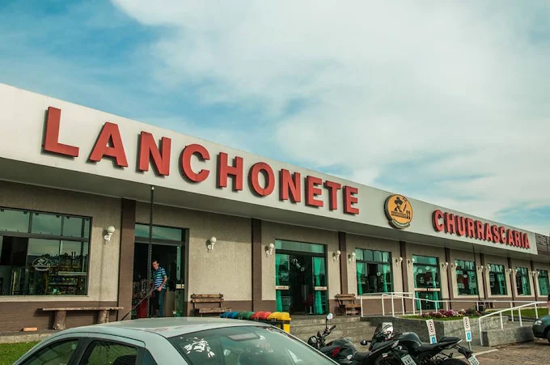
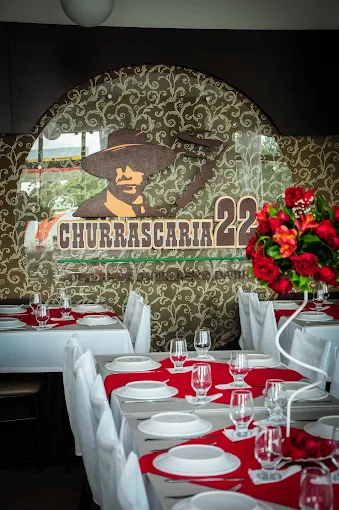
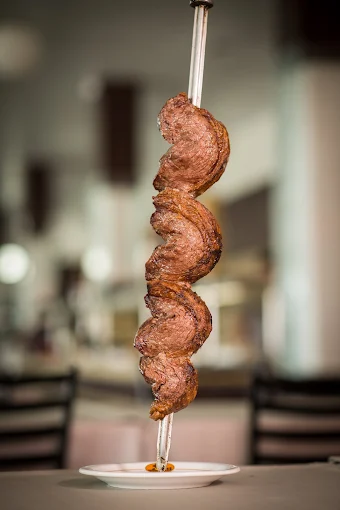
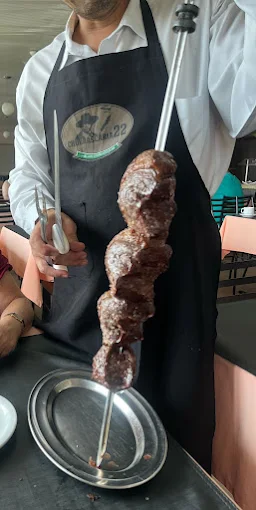
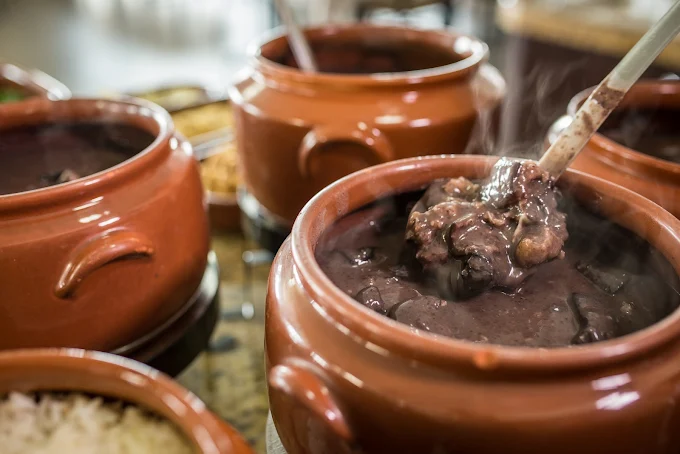
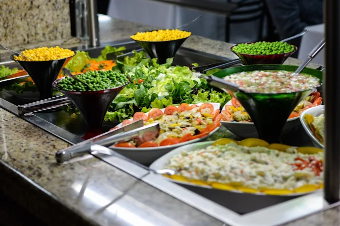

Churrascaria · Fazenda Rio Grande/PR
Churrasco na BR-116, em Fazenda Rio Grande
Buffet com churrasco, comida japonesa, feijoada e o pão com bife que virou marca da casa. Parada de estrada no KM 128, com o salão sempre limpo e a chapa sempre quente.
4,4 no Google · 3.734 avaliações
Ticket médio R$ 20–100 por pessoa

Churrasco e comida japonesa
Dois buffets que ninguém espera achar juntos num posto de estrada.
Fácil de parar
No KM 128 da BR-116, dentro do posto. Entra, come bem e segue viagem.
Salão limpo e confortável
É o que mais aparece nas avaliações, depois da carne.
O que servimos
Um buffet que dá conta de quem quer almoço de domingo e de quem só quer comer bem antes de voltar pra estrada.
-
Churrasco
Cortes na brasa saindo o dia inteiro, servidos direto na mesa.
-
Buffet variado
Comida japonesa, feijoada, pratos quentes e saladas no mesmo buffet.
-
Pão com bife
O clássico da casa, pra quem parou com pressa e não abre mão de comer bem.
Atendemos no salão e para viagem.
Parada na BR-116
Ficamos no KM 128 da BR-116, em Santa Terezinha, dentro do posto. Já foi almoço de casamento, almoço de domingo em família e parada rápida de quem estava só de passagem — o salão comporta os três no mesmo dia.
- Churrasco
- Buffet de comida japonesa
- Feijoada
- Salão climatizado
- Estacionamento de posto
- Para viagem






Quem veio, contou
Nota 4,4 no Google, de 3.734 avaliações de quem já veio.
Após a cerimônia do nosso casamento, escolhemos a Churrascaria 22 para reunir nossos familiares e amigos em um almoço, e foi uma experiência maravilhosa. A comida estava deliciosa, o ambiente muito agradável e o atendimento impecável.
Restaurante excelente! Comida muito saborosa, atendimento impecável e ambiente agradável. Com certeza voltarei mais vezes.
Recomendo, excelente local para refeições.
Onde estamos
BR-116, KM 128 – Santa Terezinha, Fazenda Rio Grande/PRCEP 83820-000
Dentro do posto Shell
Horário
- Todos os diasaté meia-noite